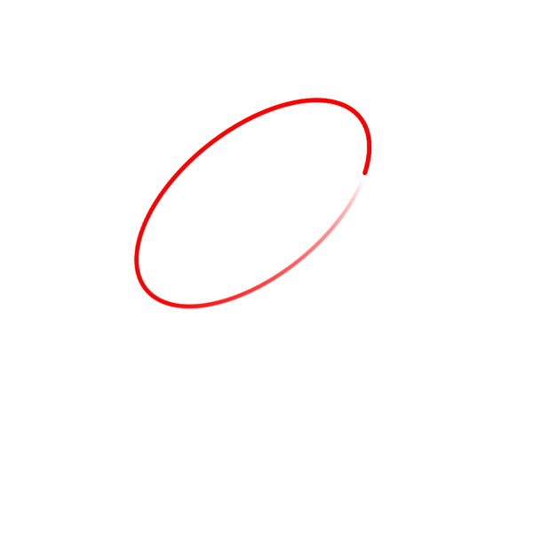
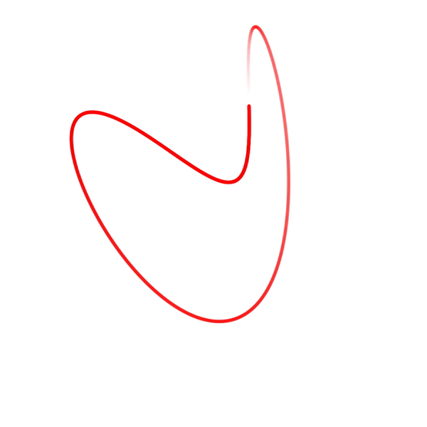
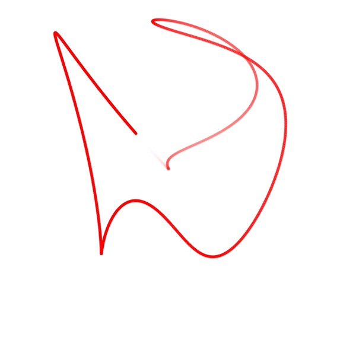
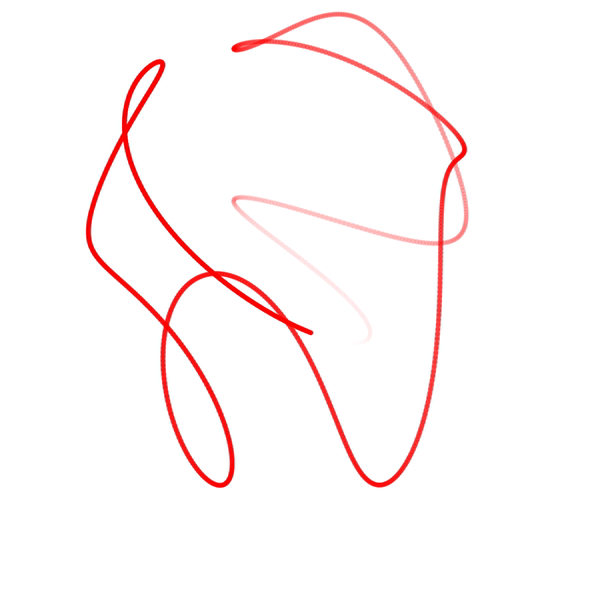
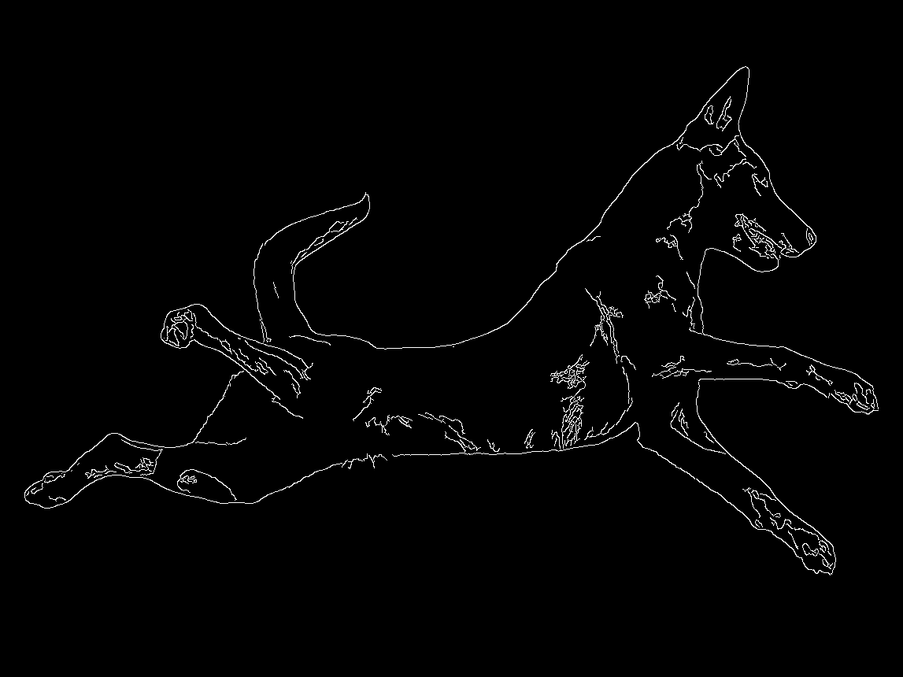
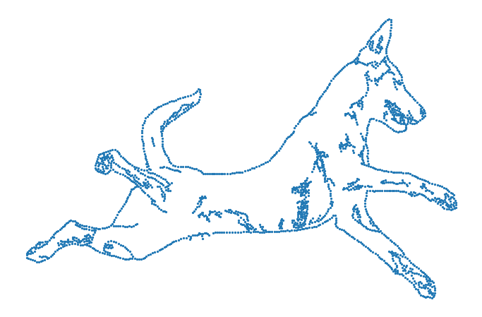
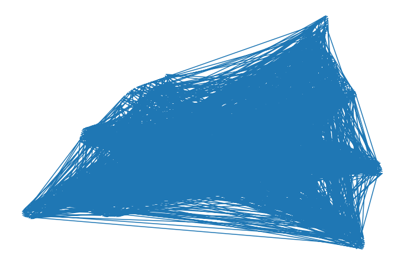
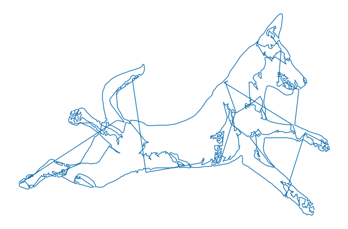
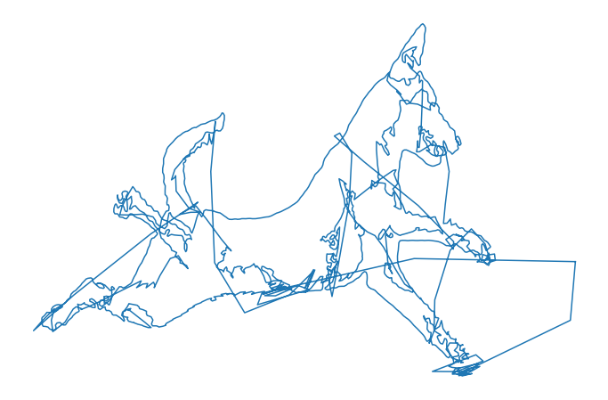

Any signal can be approximated by a Fourier Series — a sum of rotating complex exponentials. Here I apply that idea to something unusual: the edge contour of a face image, treated as a path through the complex plane.
The animations below show the approximation $f_N(t)$ as the number of Fourier components $N$ increases. At $N=1$ you get a rough circle; by $N=500$ the face is fully reconstructed.






The Fourier Series
Let $t \in \mathcal{T} = [t_0, t_1]$ and $f : \mathcal{T} \rightarrow \mathbb{C}$ be the complex-valued function tracing the edge contour. Its Fourier approximation using $2N+1$ components is:
where $T = t_1 - t_0$ and the Fourier coefficients are:
Step 1 — Load the image
import numpy as np
import matplotlib.pyplot as plt
from PIL import Image
import cv2, requests
url = 'https://guglielmocamporese.github.io/static/static/img/fourier/image.png'
image = np.array(Image.open(requests.get(url, stream=True).raw))Step 2 — Extract edges
Gaussian blur followed by Canny edge detection gives a clean binary edge map:
def get_edges(x):
x = cv2.GaussianBlur(x, (5, 5), 0)
x = cv2.Canny(x, 10, 200)
return x
edges = get_edges(image)
Step 3 — Reduce points with k-means
The raw edge map has ~13,000 pixels. To make the Fourier computation tractable, I reduce these to 2,000 representative points using k-means clustering:
from sklearn.cluster import KMeans
edges_pts = np.stack(np.where(edges), 1)
edges_pts[:, 0] = image.shape[0] - edges_pts[:, 0]
edges_pts = np.stack([edges_pts[:, 1], edges_pts[:, 0]], 1)
kmeans = KMeans(n_clusters=2000, random_state=0).fit(edges_pts)
edges_centers = kmeans.cluster_centers_
Step 4 — Order the points
The cluster centres are an unordered set — connecting them naively gives a tangled mess. I sort them greedily by nearest-neighbour distance:

dist = lambda p0, p1: (((p0 - p1) ** 2).sum() ** 0.5)
def sort_points(points):
ordered = [points[0]]
rest = list(points[1:])
while rest:
p0 = ordered[-1]
i = int(np.argmin([dist(p0, p) for p in rest]))
ordered.append(rest.pop(i))
return np.array(ordered)
edges_sorted = sort_points(edges_centers)
Step 5 — Compute the Fourier transform
Since $f(t)$ is complex (2D coordinates encoded as real + imaginary parts), the coefficients expand to:
def f_transform(f, N=100):
y = np.zeros_like(f)
t = np.linspace(0, 1, f.shape[0])
dt = t[1] - t[0]
f_re, f_im = f[:, 0], f[:, 1]
for n in range(-N, N + 1):
theta = 2 * np.pi * n
cos_n = np.cos(theta * t)
sin_n = np.sin(theta * t)
c_re = (f_re * cos_n + f_im * sin_n).sum() * dt
c_im = (-f_re * sin_n + f_im * cos_n).sum() * dt
y += np.stack([c_re * cos_n - c_im * sin_n,
c_re * sin_n + c_im * cos_n], 1)
return y
y = f_transform(edges_sorted, N=550)